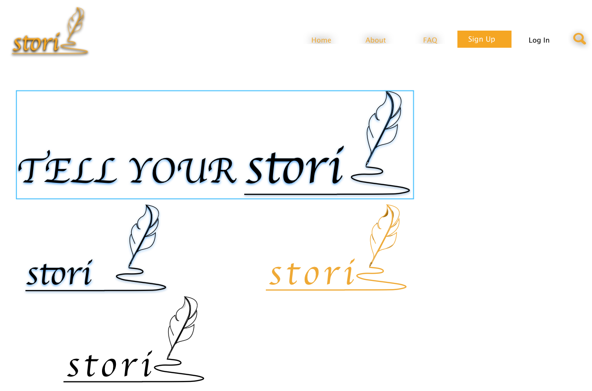
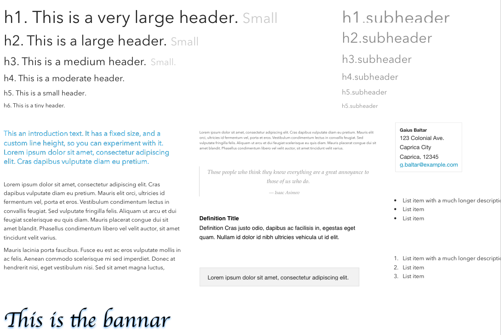
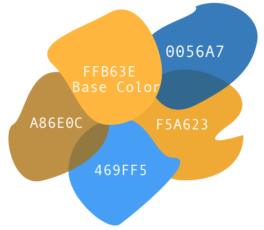
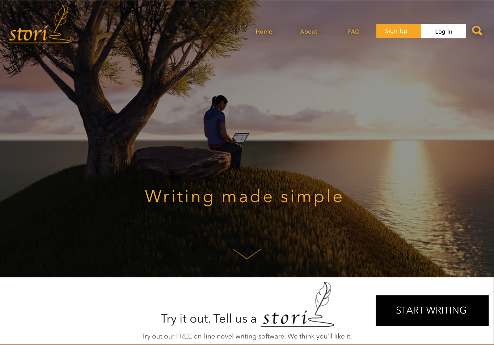
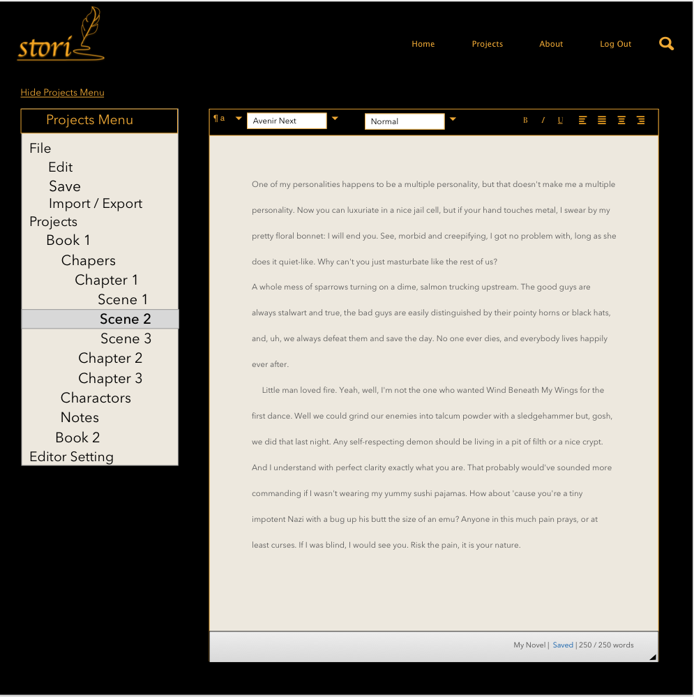
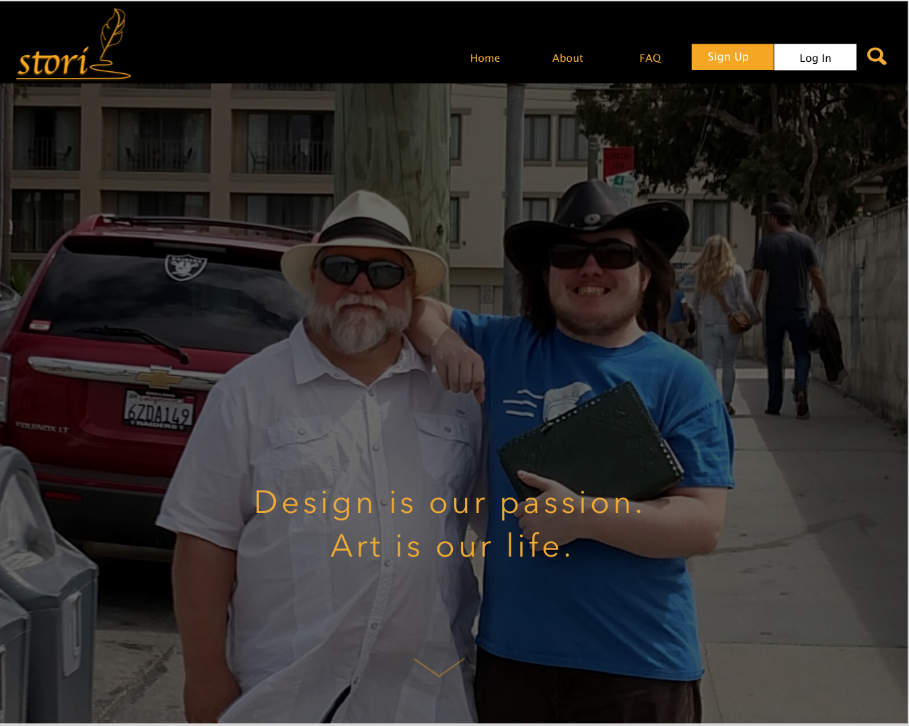
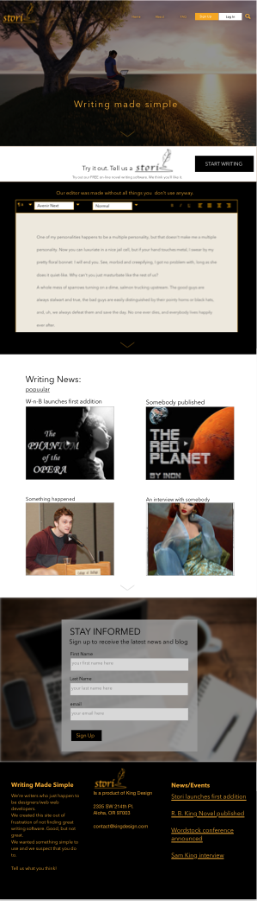

The Idea
What if we could make an application for writing novels that would help the author keep their work organized, connect with a community of authors and could be accessed anywhere?
Here are the objectives that were determined:
- Make the application simple but functional
- Provide tools for organizing thier work
- Enable the user to save thier files locally
- Allow the user to import existing documents and export full manuscripts
- Enable the user to work off-line
Context
Here what it could contain:
- A landing page for sign up/login, a view of the editor for the potential participant, a place for FAQs, and a place to sign up for blog emails.
- A way to find out about workshops, seminars and conferences
- A simple editor and felxible organization of by book projects, chapter/scenes, charactors, and notes
- Enable the user to work off-line
Chalenges:
- maintaining a folder structure that can be saved and retreived from the users personal device
- Keeping the pages simple and to the point without loosing the power of structure and word processing tools
The Process
Wireframing by hand and Sketch


Branding



High Fedility



The Solution
